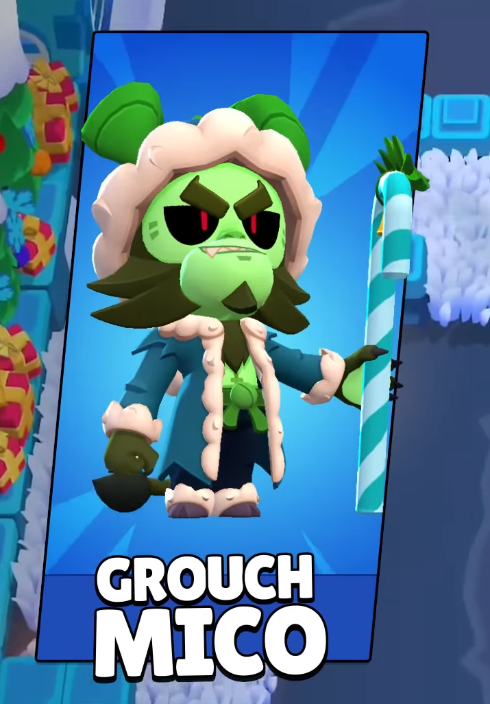
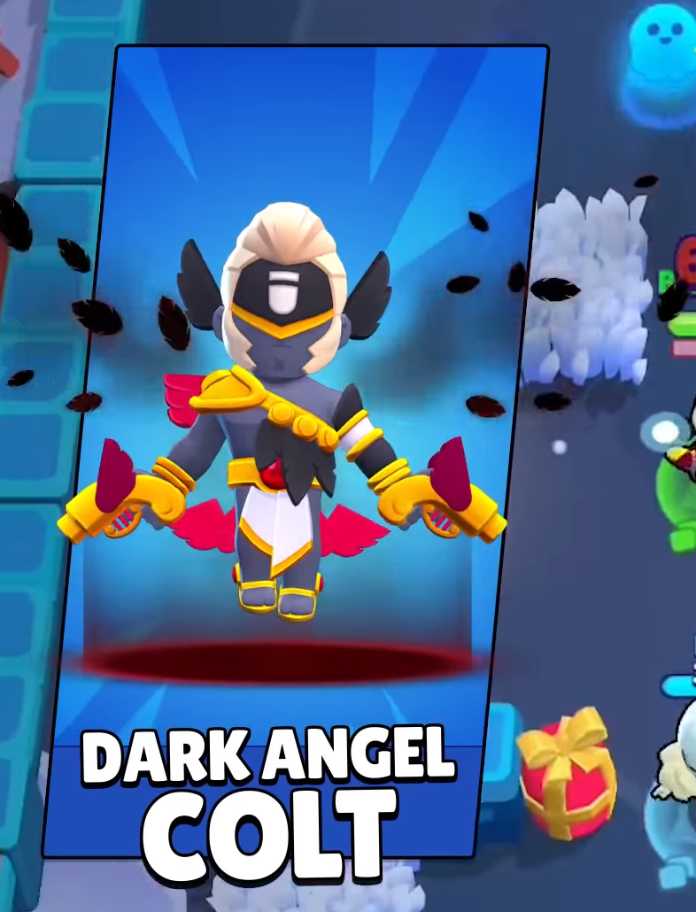
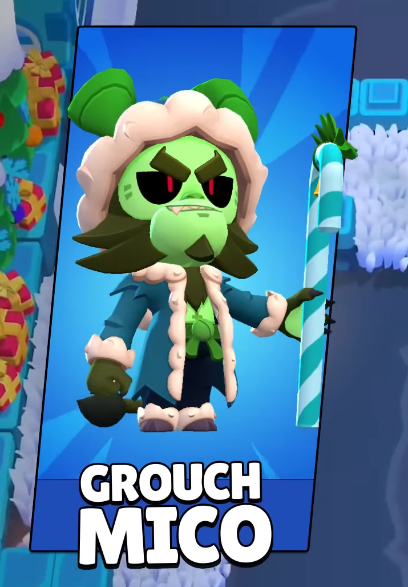
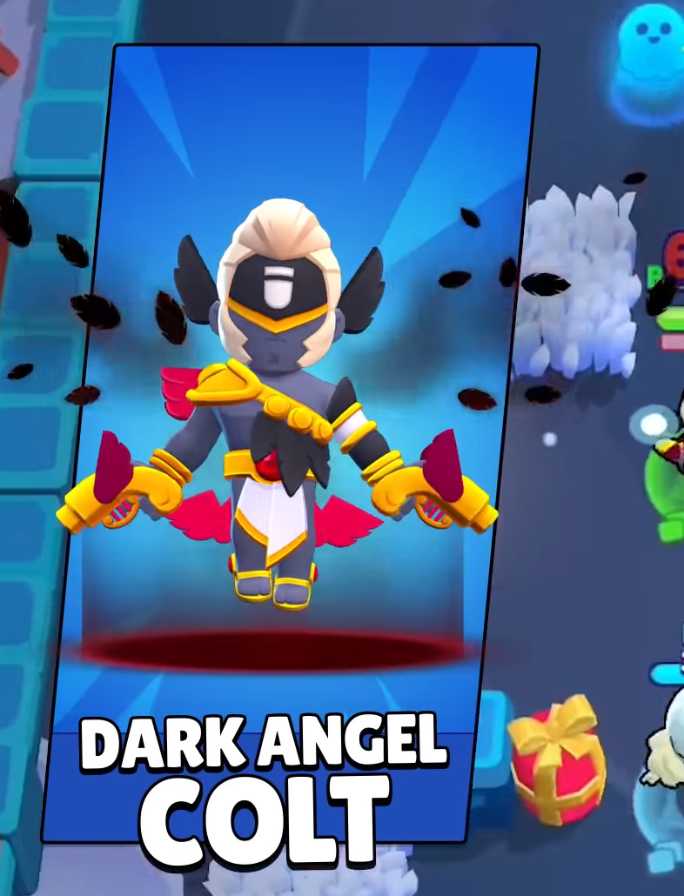

Новые скины в декабре 2023.
BRAWL TALK
В этом сезоне вернутся праздничные скины, а скины «Страшные зимние сказки» будут доступны со скидкой! Представляем новые праздничные скины:
Санта Сту |
Гринч Мико |
Темный ангел Кольт |
BRAWL TALK
Мы поговорим про контент на ближайшие 3 месяца и начнем с декабря!
Буквально через пару проекту Бравл Старс нам исполняется пять лет! и продолжая тему праздников:
Мико, первый из трех новых бойцов, появится в игре 14 декабря и будет бесплатным. Вы найдете его в праздничном календаре! Он присоединяется к Лоле и Грею, замыкая трио из Броуливуда.Он считает себя лучшим режиссером и актером кино, но на самом деле он всего лишь держит микрофон на съемках броуливудских фильмов.
BRAWL TALK
В этом сезоне вернутся праздничные скины, а скины «Страшные зимние сказки» будут доступны со скидкой! Представляем новые праздничные скины:
Санта Сту |
Гринч Мико |
Темный ангел Кольт |